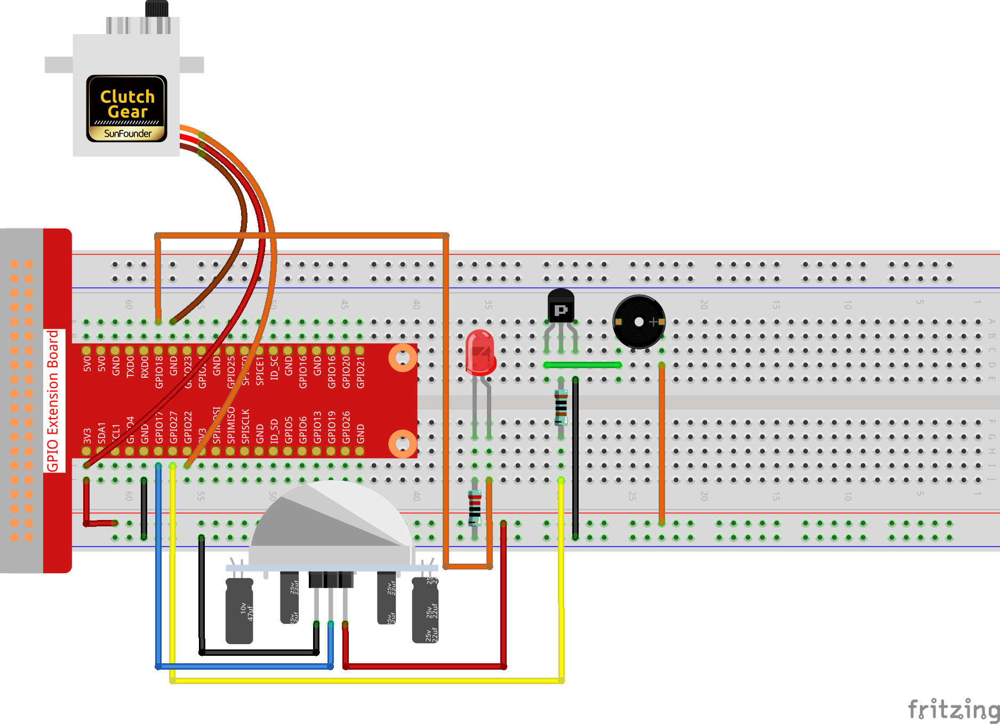

3.1.2 Willkommen¶
Einführung¶
In diesem Projekt werden wir PIR verwenden, um die Bewegung von Fußgängern zu erfassen, und Servos, LED und Summer verwenden, um die Arbeit der Sensortür des Supermarkts zu simulieren. Wenn der Fußgänger innerhalb des Erfassungsbereichs des PIR erscheint, leuchtet die Anzeigelampe, die Tür wird geöffnet und der Summer ertönt die Öffnungsglocke.
Komponenten¶

Schematische Darstellung¶
T-Karte Name |
physisch |
wiringPi |
BCM |
GPIO18 |
Pin 12 |
1 |
18 |
GPIO17 |
Pin 11 |
0 |
17 |
GPIO27 |
Pin 13 |
2 |
27 |
GPIO22 |
Pin 15 |
3 |
22 |
Experimentelle Verfahren¶
Schritt 1: Bauen Sie die Schaltung auf.
{kind=link}
Für Benutzer in C-Sprache¶
Schritt 2: Verzeichnis wechseln.
cd /home/pi/davinci-kit-for-raspberry-pi/c/3.1.2/
Schritt 3: Kompilieren.
gcc 3.1.2_Welcome.c -lwiringPi
Schritt 4: Ausführen.
sudo ./a.out
Wenn der PIR-Sensor nach dem Ausführen der Kode jemanden erkennt, der vorbeikommt, öffnet sich die Tür automatisch (vom Servo simuliert), schaltet die Anzeige ein und spielt die Türklingelmusik ab. Nachdem die Türklingelmusik abgespielt wurde, schließt das System automatisch die Tür und schaltet die Anzeigelampe aus, um auf das nächste Mal zu warten, wenn jemand vorbeikommt.
Kode Erklärung
void setAngle(int pin, int angle){ //Create a funtion to control the angle of the servo.
if(angle < 0)
angle = 0;
if(angle > 180)
angle = 180;
softPwmWrite(pin,Map(angle, 0, 180, 5, 25));
}
Erstellen Sie eine Funktion, setAngle, um den Winkel im Servo von 0-180 zu schreiben.
void doorbell(){
for(int i=0;i<sizeof(song)/4;i++){
softToneWrite(BuzPin, song[i]);
delay(beat[i] * 250);
}
Erstellen Sie eine Funktion, Türklingel, damit der Summer Musik abspielen kann.
void closedoor(){
digitalWrite(ledPin, LOW); //led off
for(int i=180;i>-1;i--){ //make servo rotate from maximum angle to minimum angle
setAngle(servoPin,i);
delay(1);
}
}
Erstellen Sie eine Closedoor-Funktion, um das Schließen der Tür zu simulieren, schalten Sie die LED aus und lassen Sie das Servo von 180 Grad auf 0 Grad drehen.
void opendoor(){
digitalWrite(ledPin, HIGH); //led on
for(int i=0;i<181;i++){ //make servo rotate from minimum angle to maximum angle
setAngle(servoPin,i);
delay(1);
}
doorbell();
closedoor();
}
Die Funktion opendoor () besteht aus mehreren Teilen: Schalten Sie die Anzeigelampe ein, schalten Sie das Servo ein (simulieren Sie das Öffnen der Tür), spielen Sie die Klingelmusik des Supermarkts und rufen Sie nach dem Abspielen der Musik die Funktion geschlossene Tür () auf.
int main(void)
{
if(wiringPiSetup() == -1){ //when initialize wiring failed,print message to screen
printf("setup wiringPi failed !");
return 1;
}
if(softToneCreate(BuzPin) == -1){
printf("setup softTone failed !");
return 1;
......
Initialisieren Sie in der Funktion main () die Bibliothek wiringPi und richten Sie softTone ein. Setzen Sie dann ledPin in den Ausgabestatus und pirPin in den Eingabestatus. Wenn der PIR-Sensor jemanden erkennt, der vorbeikommt, wird die Funktion opendoor aufgerufen, um das Öffnen der Tür zu simulieren.
Für Python-Sprachbenutzer¶
Schritt 2: Verzeichnis wechseln.
cd /home/pi/davinci-kit-for-raspberry-pi/python/
Schritt 3: Ausführen.
sudo python3 3.1.2_Welcome.py
Wenn der PIR-Sensor nach dem Ausführen der Kode jemanden erkennt, der vorbeikommt, öffnet sich die Tür automatisch (vom Servo simuliert), schaltet die Anzeige ein und spielt die Türklingelmusik ab. Nachdem die Türklingelmusik abgespielt wurde, schließt das System automatisch die Tür und schaltet die Anzeigelampe aus, um auf das nächste Mal zu warten, wenn jemand vorbeikommt.
Kode Erklärung
def setup():
global p
global Buzz # Assign a global variable to replace GPIO.PWM
GPIO.setmode(GPIO.BCM) # Numbers GPIOs by physical location
GPIO.setup(ledPin, GPIO.OUT) # Set ledPin's mode is output
GPIO.setup(pirPin, GPIO.IN) # Set sensorPin's mode is input
GPIO.setup(buzPin, GPIO.OUT) # Set pins' mode is output
Buzz = GPIO.PWM(buzPin, 440) # 440 is initial frequency.
Buzz.start(50) # Start Buzzer pin with 50% duty ration
GPIO.setup(servoPin, GPIO.OUT) # Set servoPin's mode is output
GPIO.output(servoPin, GPIO.LOW) # Set servoPin to low
p = GPIO.PWM(servoPin, 50) # set Frequece to 50Hz
p.start(0) # Duty Cycle = 0
Diese Anweisungen werden verwendet, um die Pins jeder Komponente zu initialisieren.
def setAngle(angle): # make the servo rotate to specific angle (0-180 degrees)
angle = max(0, min(180, angle))
pulse_width = map(angle, 0, 180, SERVO_MIN_PULSE, SERVO_MAX_PULSE)
pwm = map(pulse_width, 0, 20000, 0, 100)
p.ChangeDutyCycle(pwm)#map the angle to duty cycle and output it
Erstellen Sie eine Funktion von servowrite, um den Winkel in das Servo zu schreiben, der 0-180 ist.
def doorbell():
for i in range(1,len(song)): # Play song1
Buzz.ChangeFrequency(song[i]) # Change the frequency along the song note
time.sleep(beat[i] * 0.25) # delay a note for beat * 0.25s
Erstellen Sie eine Funktion, Türklingel, damit der Summer Musik abspielen kann.
def closedoor():
GPIO.output(ledPin, GPIO.LOW)
Buzz.ChangeFrequency(1)
for i in range(180, -1, -1): #make servo rotate from 180 to 0 deg
setAngle(i)
time.sleep(0.001)
Schließen Sie die Tür und schalten Sie die Kontrollleuchte aus.
def opendoor():
GPIO.output(ledPin, GPIO.LOW)
for i in range(0, 181, 1): #make servo rotate from 0 to 180 deg
setAngle(i) # Write to servo
time.sleep(0.001)
doorbell()
closedoor()
Die Funktion opendoor () besteht aus mehreren Teilen: Schalten Sie die Anzeigelampe ein, schalten Sie das Servo ein (um das Öffnen der Tür zu simulieren), spielen Sie die Klingelmusik des Supermarkts und rufen Sie nach dem Spielen die Funktion Closedoor() auf Musik.
def loop():
while True:
if GPIO.input(pirPin)==GPIO.HIGH:
opendoor()
Wenn RIP erkennt, dass jemand vorbeikommt, ruft es die Funktion opendoor() auf.
Phänomen Bild¶